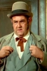

Country:United States, 52 minutes
Spoken languages:
Genres:Animation, Family, Sci-Fi
Director(s):Larry Roemer
Writer(s):Romeo Muller
Video Codec:Unknown
Number: 1300


Certification:G
Storyline:
Sam the snowman tells us the story of a young red-nosed reindeer who, after being ousted from the reindeer games because of his glowing nose, teams up with Hermey, an elf who wants to be a dentist, and Yukon Cornelius, the prospector. They run into the Abominable Snowman and find a whole island of misfit toys. Rudoph vows to see if he can get Santa to help the toys, and he goes back to the North Pole on Christmas Eve. But Santa's sleigh is fogged in. But when Santa looks over Rudolph, he gets a very bright idea...
Cast: 


Medium: Original DVD,
Loaned: No
Aspect ratio: Unknown